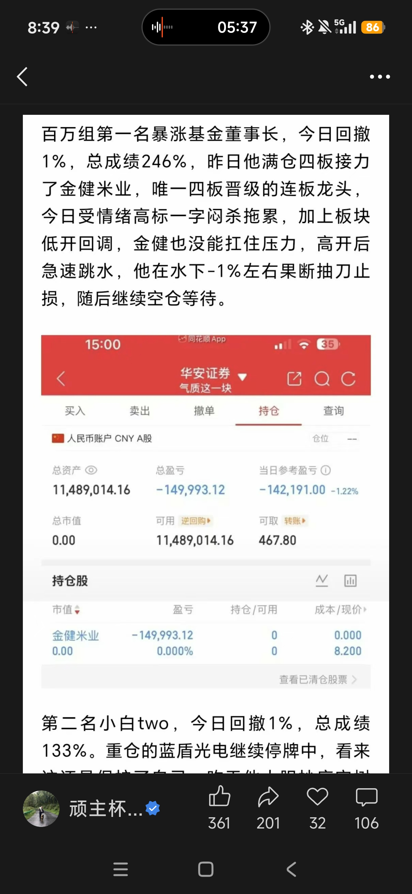

亏损约 -1%，但大肉没有充分吃到
回撤控制比前几个月明显改善，很多亏损已经变成模式失败后的正常小亏。真正要修的是执行端：传智教育、百花医药、深中华A、千金药业这些机会看到了，但扫板、排板、同批次切换和板上确认没有完全跟上。
核心总纲
主线明朗做龙头，混沌无龙做低位接力，退潮空仓。
全套体系只解决一个问题：在不同情绪周期里，用不同仓位做不同确定性，不把龙头主升、低位试错和退潮防守混在一起。
连续开盘以及开盘十分钟内超预期表现超过 2 次及以上，都是龙头预备了！
2026年8月复盘增强版
本月复盘的核心不是增加交易次数，而是把该做的核心机会标准化：盘前列池，竞价PK，板上确认，弱强切换，失败用条件单结束。
回撤控制比前几个月明显改善，很多亏损已经变成模式失败后的正常小亏。真正要修的是执行端：传智教育、百花医药、深中华A、千金药业这些机会看到了，但扫板、排板、同批次切换和板上确认没有完全跟上。
整月回撤可控
机会识别强于执行
爆量弱转强回封
不做次高和弱者
爆量弱转强不是单票孤立信号，而是同批次PK后的进攻点；买入靠回封确认，持有靠次日转强确认，失败靠条件单和走弱即走结束。
从低位走到7板，核心问题不是没看懂，而是扫板和排板动作没跟上。以后最高标回封时要提前准备执行。
3板爆量弱转强、4板转强确认是主升2的核心买点；二波首板可以试，但不续强必须撤。
题材不强时不扩散做后排，但若个股身位、盘口、上板顺序都最强，就按最高标抱团处理。
4板仍像补涨阶段，5板跨过去才有脱离补涨、尝试新周期的确认意义；资金不继续认就拿溢价撤。
3板和4板逻辑可成立，但题材共振走弱叠加动态跌停条件单缺失，会把正确买点拖成被动亏损。
亏约 -2% 能接受，说明风控执行有效；更大的规则是科技更适合趋势核心或ETF，不适合硬套连板接力。
一进二做新题材最强套利；3板及以上进入爆量弱转强主战场；4板更舒服但要区分总龙和补涨；5板是成龙或脱离补涨节点；次日加仓只在板上扫板或回封确认。
低开严重不及预期走；断板走；题材共振走弱降预期；二波不续强走；走弱不加仓；条件单必须前置。
题材强时做题材龙头，题材弱时只做最高标抱团；补涨龙低位做，高位除非脱离；科技趋势不按连板硬追。
盘前列出3板以上和一进二候选，竞价做同批PK，盘中等板上确认，收盘归因到节点、题材、盘口、身位、买点、卖点和条件单。
龙头主升前置判断
三到四板是定龙分水岭，五板正式定龙。若有题材支撑，一般会走到七板；若题材支撑不足，才可能在六板断掉。
三到四板先看爆量分歧后的承接和弱转强，五板若继续超预期，龙头身份才真正坐实。
操作：主升2开始才建仓，确认转强再加仓，不提前重仓赌龙。主升2通常是4-7板，目标是冲击100%的监管红线；这是仓位效率和确定性最匹配的阶段。
操作：主升2开始建仓，主升2结束离场，不把仓位拖进主升3高位博弈。三板及以上若同时出现两到三个有辨识度、带题材性的高标，不能只看单个票，要比较谁更能成为市场抱团的唯一出口。
操作：同板或近板先分仓跟踪，次日用竞价强弱、开盘承接和拉板速度择强。这一段以发现题材、观察高度和辨识度为主，不是重仓舒适区，避免在未定龙前押错方向。
3-5板出现爆量弱转强，就是主升2开始的标志，也是建仓点；若次日缩量快速高开、超预期拉板，再加仓。
主升3是冲击200%的异动阶段，更多是监管和情绪极限博弈；体系上以主升2结束离场为主。
老龙二波首板可试仓，但次日必须续强；不续强、低开、走弱或往跌停方向走，就撤。
只做新题材、新催化、新周期里的最强2板，不做后排跟风；2板后看3板能否爆量弱转强。
三板可以做，但必须放进全市场比较：若已有更高、更强盘口、更强题材标的，优先级下降。
总龙、新题材最强标、全市场最高标的4板爆量回封可做；补涨龙4板要谨慎。
跨过5板后，市场认可度、最高标抱团属性和龙头确认意义明显提高，是本月重点训练节点。
若5板已跨过，仍是全市场最高标、盘口承接强、题材至少能支撑，六板仍可作为确认节点。
接近100%异动监管线，重点看承接、分歧、过度一致和监管距离；持仓处理利润，不盲目加仓。
建仓与加仓
持有与减仓
票池自选
票池不是随手收藏，而是对所有二板及以上个股做结构化筛选：先分析，再决定是否进入重点观察。
重点个股选择：二板及以上，股价和市值都很合适的，才进入核心自选。
看涨停质量、成交量变化、分时承接、封单强弱和是否爆量失控。
看前期套牢盘、获利盘、换手是否充分，以及上方压力是否容易释放。
看题材内一板、二板、中高位梯队是否完整，板块容量能否承接资金继续进攻。
判断是下跌波段的抱团行情，还是上升阶段的大盘共振趋势行情。
比较主线、支线、新题材和老题材的资金强弱，避免被竞争题材抽血。
观察连板生态环境：高度、晋级率、炸板率、亏钱效应和资金接力意愿。
最高标抱团
如果两个标的板数接近、股价市值合适、筹码结构和题材都不错，最稳妥的选择是两个都做、各半仓左右；再通过次日强弱择强切换。
当你无法确定最后是哪个题材走出来时，不要急着单押。两个高标都具备辨识度，就先分仓参与，避免押错唯一性。
如果其中一个相对更高板、更有身位优势，激进仓位可以偏向更高连板。但只要另一个仍有强题材和好结构，就不能完全忽略。
若今天两个都差不多强，明天继续看竞价、开盘承接和拉板速度。某一天一个竞价明显转弱、另一个明显转强，就切到更强的抱团标的。
类似传智与一鸣这类不同题材高标同时竞争时，关键是分清最后走出来的是哪条线：AI 应用还是消费。没有确认前，半仓分散比过早单押更稳。
8月新增执行规则
爆量弱转强不是单票逻辑。次日不要只盯自己手里的票，要把同批次所有高标放一起比较，强的优先，弱的处理。
盘前列出所有3板及以上标的，标注板数、题材、身位、是否最高标、是否爆量弱转强。
竞价比较谁高开超预期、谁低开不及预期、谁题材更顺、谁盘口更强。
开盘只等板上扫板或回封确认；冲高但没封住，不做半路点火。
持仓弱、竞品强时，卖弱切强。风范股份弱于百花医药，楚天龙弱于深中华A，都是这种训练样本。
今日选择哪个战法
每天先回答四个问题：情绪在哪个阶段、题材属于情绪连板还是趋势主升、有没有真龙、明天是否有足够溢价。
题材持续发酵，市场有公认高位人气总龙，资金聚焦，板块内梯队清晰。真龙必须用七维交叉确认。
市场混沌，题材散乱，但连续冰点后出现新题材共振，或板块分歧后留下活口。
板块一致高潮、竞价崩盘、涨停指数走弱、题材电风扇轮动，任何一个都足够让交易降速。
共振概念
涨停表现本身就是强势表现。当个股涨停共振于大盘回暖、强回流或整体强势表现时，容易跟随大盘强势继续连板涨停。
参考案例：8.4 二板的宝鼎科技（PCB题材）。上一个节点的龙头断板结束时，通常会有一批新的涨停个股出现，资金容易高低切承接，把新的前排顶出来。
核心理解：资金永不眠，老龙断板时要观察新涨停梯队。只在主线明确、真龙已被七维确认时提高仓位。第一性看身位，唯一性看题材内、题材之间以及最高标抱团的唯一出口；首次弱转强确认，盈亏比最优。
交易前提
所有买点都必须服从周期。逆周期没有英雄主义，只有回撤。
主线清晰、龙头出现，仓位向核心龙头集中。
无高位总龙，只做低位核心试错，失败要快。
优先空仓防守，闲置资金可做逆回购。
两大战法
龙头战法解决“确定性主升”，低位接力解决“无龙时的轻仓试错”。两者不交叉。
有龙主升期
无龙混沌期
细分手册
打开《A股一进二战法手册》龙头共振节奏
板块分歧震荡，个股逆势抗跌。
板块资金回流，个股领涨或跟风封板，龙头地位基本确立。
板块再度分歧，个股维持抗跌走势。
板块行情修复，个股受情绪推动上板，进入第二道核心门槛。
板块分歧洗盘，个股走势保持稳健。
板块行情迎来高潮，个股顺势加速封板。
| 维度 | 有龙主升期：中位龙头博弈 | 无龙混沌期：低位1进2接力 |
|---|---|---|
| 适用环境 | 主线题材明确，题材持续发酵，市场走出公认高位人气总龙。 | 市场无高位总龙，题材散乱，情绪反复震荡，处于混沌试错阶段。 |
| 入场条件 | 三到四板完成定龙分水岭观察；3-5板爆量弱转强启动主升2；次日缩量快速高开并超预期拉板再确认加仓。 | 只做三种允许场景；竞价强度前三；量能在线；板块前排、大长腿实体阳线优先。 |
| 仓位建议 | 第一笔一般5成仓以下；次日转强确认后可加至8成仓及以上；出现爆量、炸板或断板先减半。 | 一进二试错期单票仓位不到50%，总仓位小于80%；只做前排，不集中后排杂毛。 |
| 离场规则 | 高位爆量长上影、放量十字星、放量断板大阴线、封死跌停，触发必走。 | 次日水下低开或无承接直接走；2板无龙头属性减半；三板依规减半；四板分批减仓离场。 |
不可逾越
这部分不用于讨论，只用于执行。触发条件就离场，不能用临盘情绪重新解释。
触及无条件离场。龙头可放宽至≤-4%，但必须结合分时承接，无承接不犹豫。
低位接力不恋战，龙头可适度格局，但必须随强弱变化抬升保护线。
触及后仓位降至20%以下，停止新交易，先复盘再恢复。
无题材、无人气、无资金关注的标的直接剔除；退潮期不强行博弈。
8月禁止清单
董事长错题本
排不到真龙就去买次强，看到题材热就补低一位，情绪高标杀跌还去做中位，这些都不是模式内交易，而是把清晰战法变成随手单。
核心票排不到就空仓等下一次，不用低一位、次强、杂毛去安慰自己。
分歧炸板、承接走弱、板块退潮时，卖点优先级必须高于观点。
监管压力、情绪杀高标、板块低开回调同时出现，先清风险再复盘。
环境、题材、身位、买点四件事不齐，不允许把仓位打到核心级别。


只要答案不是核心前排，仓位就必须降级；只要炸板和退潮信号出现，先执行卖点，再讨论是否卖飞。
执行动作
买卖不是临盘感觉，是每个持仓票都必须提前设置、动态调整、按分时强弱执行的动作纪律。
外出或无法盯盘时，判断不完整，最容易出现随手单，这是回撤放大的亏损来源之一。
执行：只有电脑盯盘时才允许上重仓（40%以上）；手机盯盘只能4成以下，无法冷静全面思考就不要乱上仓位博弈。每个持仓票都必须根据分时变化程度设置动态条件单，结合关键支撑位调整，目标是不亏损离场。
执行：以必须成交为第一优先，必要时设置跌停单，防止快速跳水时无法成交。分时变化时，买卖采用金字塔原则：越买越高，越卖越低。只有价格和强度配合，才继续买卖。
若越买不越高，停止加仓；若越卖越不低，停止利润回吐，静观其变。犯错误的时候，唯一能做的就是停止继续犯错。错误加仓、错误格局、条件单缺失，都先停下来。
执行：停止沉没成本，先保护仓位和利润，再重新判断。必须为某一题材建立梯队票池，持续观察一系列题材票变化，用板块梯队反推个股与题材走势。
执行：用梯队强弱做充分判断，不只看单票分时。列出3板以上、爆量弱转强、一进二候选；把标的分成总龙、补涨龙、最高标抱团、二波首板、趋势票五类。
竞价看高开超预期和低开不及预期，但加仓不能只凭竞价完成，必须等板上确认。
爆量弱转强当天等回封建仓；次日转强确认必须等板上封住或回封，再考虑加仓或切换。
低开不及预期、承接弱、题材走弱、封不住，都按计划撤；动态跌停或破位条件单是模式的一部分。
风险核心
仓位不是胆量，是市场确定性的函数。总仓默认锁定60%到80%，保留20%机动防御仓，只有真龙确认后才向核心集中。
闭环
每一笔交易都用五天视角校验：前天、昨天看轮动节奏，今天看具体表现，明天看临盘操作，后天看溢价情况。
回看题材强弱、资金流向、板块切换和前排更替，判断市场是在延续、轮动还是退潮。
观察大盘量能、市场情绪、题材强弱、个股梯队和目标标的承接。
盘前写好标的、仓位、买点、止损和止盈；盘中按竞价、开盘和承接执行。
验证明日操作后的次日溢价。溢价概率不足70%，直接放弃该笔交易。
交割单复盘节奏
逐笔核对盈亏逻辑，修正仓位、预判和纪律漏洞。
统计战法胜率、回撤来源和最稳定的盈利形态。
复查市场风格变化，调整题材偏好、买点和仓位模型。
沉淀年度交易画像，保留有效系统，淘汰低质量动作。
8月复盘升级
买点符合节点，卖点符合纪律，哪怕小亏也算系统内交易。
走弱加仓、条件单缺失、补涨龙高位硬追、科技连板硬做，必须归入错误。
传智教育、百花医药、深中华A这类“看懂但没执行”的机会，要单独记录并训练。
每个案例都归因到节点、题材、盘口、身位、买点、卖点和条件单；次日所有爆量弱转强标的继续放进同一张PK表。
附录
首版只保留会影响交易决策的定义，后续可以继续补案例和图表。
新版总纲明确“摒弃补涨套利”。因此本页将旧版一进二里的补涨内容收束为无龙期的低位核心试错，只做主线前排、活口反包和硬逻辑趋势，不做跟风杂毛。
直接放弃。竞价资金分歧过大，容易开盘吃面。个股高开超过7%，若没有板块高潮加速预期，也不参与。
连续冰点后新题材共振、板块分歧活口反包、独立硬逻辑趋势股缩量回踩关键均线。除此之外默认空仓。
待继续补充。真正大龙头经常经历首阴、断板、反包、二波，例如浙江建投、圣龙股份、捷荣技术，都不是一路直板。
严格区分两大战法的使用场景，有龙做龙，无龙接力，互不混淆、不交叉操作。一切操作优先保护本金，稳定复利大于短期暴利。